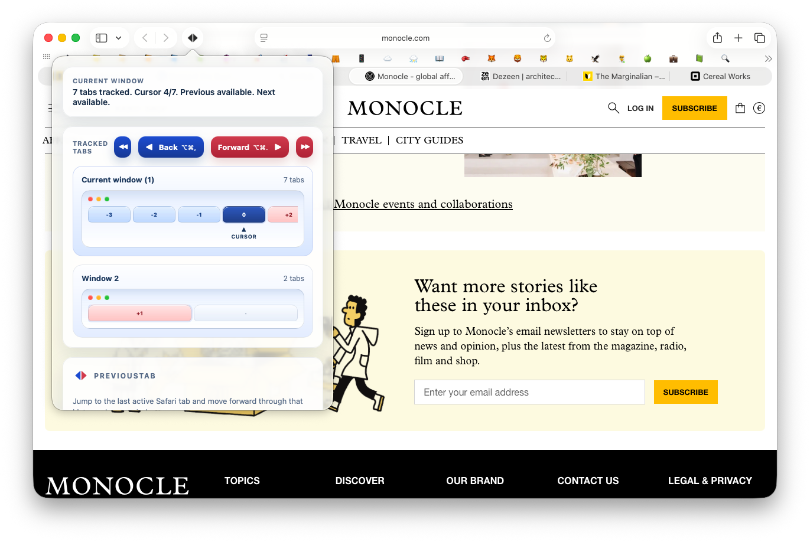
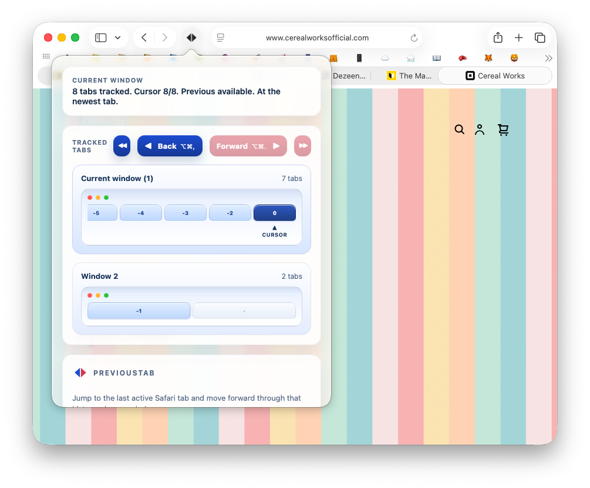
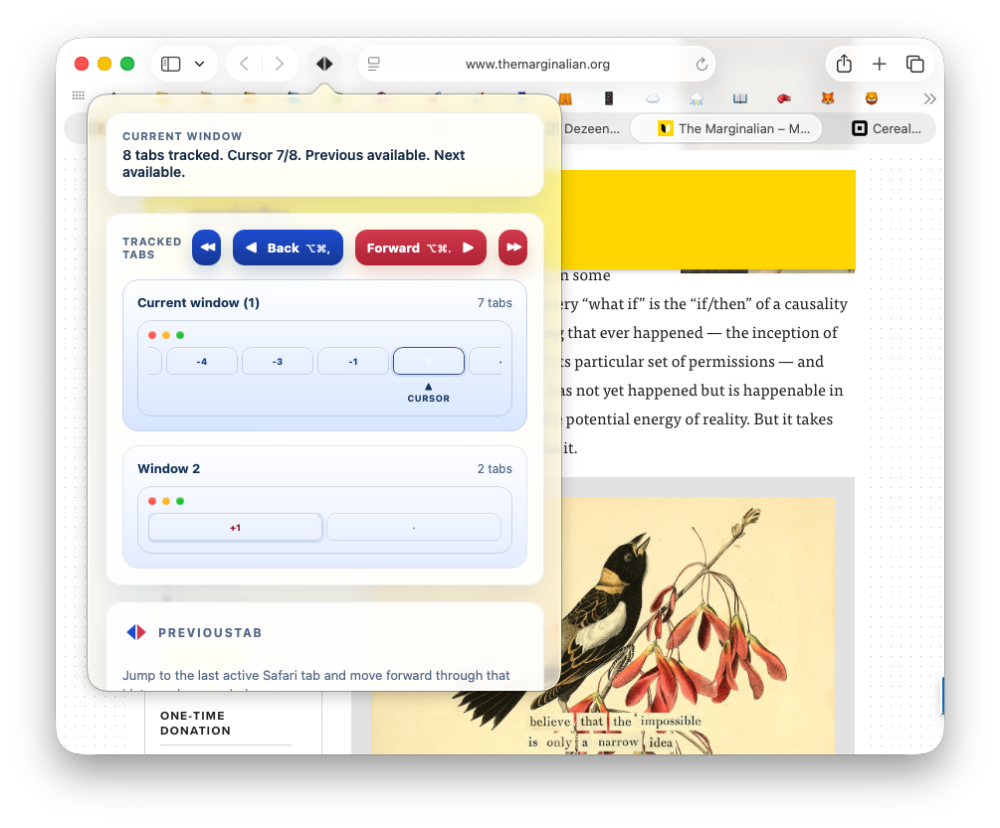
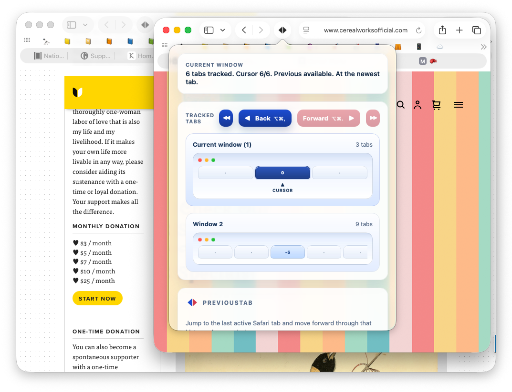

Go back to the previously active tab
By default, ⌘⌥, jumps to the last tab you were using, without making you scan crowded tab bars.
PreviousTab helps you move through the tabs you actually used, not just the tabs sitting next to each other in Safari's tab bar. It is built for keyboard-first navigation, multiple windows, and the way real browsing sessions branch and change direction.

Safari makes it easy to open many tabs, jump between windows, follow links from outside the browser, and lose the tab you were using a moment ago. PreviousTab keeps a local recent-tab trail so moving back and forward through your browsing flow is faster and more predictable.
By default, ⌘⌥, jumps to the last tab you were using, without making you scan crowded tab bars.
After stepping back, ⌘⌥. can move forward through the same recent-tab path. If you manually switch to another tab, the forward path resets to match your new flow.
Opening links in a new tab or a new Safari window is treated as part of normal browsing, so the extension is designed to keep navigation coherent across those transitions.
The product is intentionally narrow: fast previous-tab navigation, simple controls, shortcut support, and local state. These screenshots show the main behaviors the extension is built around.



By default, PreviousTab uses ⌘⌥, to go to the previously active tab and ⌘⌥. to move forward through the same recent-tab path.
Yes. You can change them in Safari Settings → Extensions → PreviousTab. The extension also stores saved shortcut choices locally so they can be restored later.
If you manually switch to a different tab instead of moving forward through the existing path, the extension treats that as a new navigation branch and resets the forward path to match.
Yes. The extension is built around real Safari workflows, including opening links in new tabs and new windows and then continuing navigation from there.
The extension requests only storage and windows. Storage is used for local settings and local recent-tab state. Windows access is used to track and navigate tabs across Safari windows.
No. The current implementation is intentionally limited. It relies on local tab and window state and avoids reading page content. The code also avoids URL/title-based behavior where Safari would require broader site-access prompts.
The extension stores its settings and recent-tab state in Safari's local extension storage on your device. There is no account system and no remote sync service in this codebase.
Yes. The popup includes a clear recent-tabs action, and the extension also supports a configurable maximum tracked-tab limit. The default limit in the code is 500, with a maximum supported value of 5000.
Yes. PreviousTab is designed specifically around Safari's extension model and Safari's window and tab behavior on macOS.
If you hit a bug, have a setup question, or need clarification about privacy or behavior, email support directly.